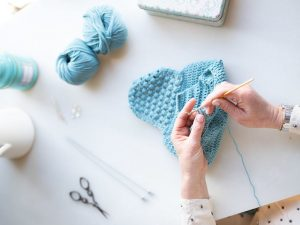

Es una técnica de tejido a mano en la que se usa un ganchillo o gancho para formar cadenas con hilos.
Se pueden usar hilos muy finos con ganchos muy delicados, hasta estambre grueso con ganchos igualmente gruesos.

Origen
Los orígenes exactos del crochet son difíciles de determinar, pero algunas evidencias sugieren que sus primeras formas surgieron en el siglo XVI en Europa.
Este arte, que consiste en entrelazar hilos mediante una aguja de crochet, se utilizaba inicialmente para crear encajes y bordados
en las vestimentas de la nobleza. Sin embargo, algunos historiadores señalan que una técnica similar ya existía en la antigua China,
donde se utilizaba para hacer adornos en los sombreros.
Materiales
Ganchos para crochet
Estambre
Marcadores
Tijeras
Cinta métrica
¿Cómo empezar?
Para empezar, se recomienda comprar buenos materiales de costo medio pero que sean suficientes para realizar proyectos de baja y
media dificultad, como al menos 3 agujas de tamaño medio (4mm, 5mm, 6mm), aguja lanera, tijeras, alfileres, marcadores de punto,
y lana de colores básicos (blanco, negro) y de los colores de 2 proyectos con los que plantees empezar
Receta
Cupcakes
Ingredientes
1 Paquete Harina para preparar pastel de vainilla, para cupcakes, (500 g)
3 Piezas Huevo para cupcakes
1 Lata Leche Evaporada para cupcakes
1/3 Taza Aceite de maíz para cupcakes
1 Lata Leche Condensada para el betún
1 Paquete Queso crema (190 g), para el betún
1 1/2 Taza Azúcar glass para el betún
150 Gramos chispas de colores para el betún
Pasos
Horno precalentado a 200 °C.
Bate la harina con los huevos, la Leche Evaporada y el aceite; hasta integrar todo.
En moldes para mantecadas coloca los capacillos y llénalos hasta ¾ partes con la mezcla.
Hornea a 200 °C por 45 minutos o hasta que al introducir un palillo de madera este salga limpio.
Retira del horno y deja enfriar.
Para el betún, bate la Leche Condensada con el queso crema y el azúcar glass hasta que se integre perfectamente.
Decora la superficie de tus cupcakes con el betún y las chispas de colores.